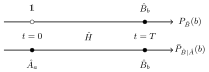

Macro
realism
MPQ theory wednesday seminar by Lucas Clemente
clemente.io/macrorealism — github
2015-01-14
This is joint work with Johannes.
The paper will be on the arxiv soonish :)
Schrödinger's cat!

What else?
Macroscopic superpositions
Molecules, atomic gases, superconducting qubits, nanomechanics, …


Macroscopic Realism
The world view that macroscopic physical properties
are independent of measurements.
Conditions for Macrorealism
1. Macrorealism
per se
A macroscopic object occupiesa definite macrostate at all times.
Conditions for Macrorealism
2. Noninvasive Measurements
It is possible to measure the statewithout changing it (or the future evolution).
Conditions for Macrorealism
3. Arrow of time
4. Freedom of choice
Mathematical formulation?
Legget-Garg Inequalities
A simple experiment
Macro-observable $Q = \pm 1$
Measurements at times $t_0, t_1, t_2$ with outcomes $Q_i$
Correlations $C_{ij} \equiv \langle Q_i Q_j\rangle = p_{++} + p_{--} - p_{+-} - p_{-+}$
Macrorealism =
Joint Probability Distribution
$$P(Q_0, Q_1, Q_2)$$at times $t_0$, $t_1$, $t_2$
Legget-Garg Inequality
$$C_{01} + C_{12} - C_{02} \leq 1$$QM, qubit: $1.5$
QM, maximum: $3$
MR ⇒ LGI
… but not the other way
LGI cannot detect every violation of MR, see later
Joint Probability
$$P(Q_0, Q_1, Q_2)$$Let's call it
$$P_{012}(Q_0, Q_1, Q_2)$$Measurements matter!
$$P_{12}(Q_1, Q_2) \neq P_{012}(Q_1, Q_2)$$No-signaling in time
$$P_{2}(Q_2) = P_{12}(Q_2) = \sum_{Q_1'} P_{12}(Q_1', Q_2)$$Here: NSIT(1)2
More NSITs
$$\text{NSIT}_{(0)1}:~P_{1} = P_{01}$$ $$\text{NSIT}_{(1)2}:~P_{2} = P_{12}$$ $$\text{NSIT}_{(0)2}:~P_{2} = P_{02}$$ $$\text{NSIT}_{0(1)2}:~P_{02} = P_{012}$$ $$\text{NSIT}_{(0)12}:~P_{12} = P_{012}$$Trivial: Arrow of time
$$\text{NSIT}_{0(1)}:~P_{0} = P_{01}$$ $$\text{NSIT}_{0(2)}:~P_{0} = P_{02}$$ $$\text{NSIT}_{1(2)}:~P_{1} = P_{12}$$ $$\text{NSIT}_{01(2)}:~P_{01} = P_{012}$$
Revisiting LGI
$$C_{01} + C_{12} - C_{02} \leq 1$$ $$C_{01} \rightarrow C_{01(2)}$$ $$C_{12} \rightarrow C_{(0)12}$$ $$C_{02} \rightarrow C_{0(1)2}$$LGI from NSIT
$$C_{01} + C_{12} - C_{02} \leq 1$$ $$\text{AoT}:~P_{01} = P_{012}$$ $$\text{NSIT}_{0(1)2}:~P_{02} = P_{012}$$ $$\text{NSIT}_{(0)12}:~P_{12} = P_{012}$$We've only used 2,3
joint probabilitites
What about the
other NSITs?

NSITs
⇕
macrorealism012
NSIT(1)2 + NSIT0(1)2 + NSIT(0)12 + AoT ⇔ MR012
Example
qubit / Mach-Zehnder
interferometer
Mach-Zehnder Interferometer
| $R_1 = R_2 = \frac{1}{2}$ | $R_1 = \frac{1}{4}, R_2 = \frac{3}{4}$ | |
| $\text{LGI}_{012}$ | $1 + 3 \cos \varphi \geq 0$ | |
| $\text{NSIT}_{(1)2}$ | $q = \frac{1}{2}$ or $\varphi = \frac{n\pi}{2}$ | $q = \frac{1}{2}$ or $\varphi = \frac{n\pi}{2}$ |
| $\text{NSIT}_{0(1)2}$ | $\varphi = \frac{n\pi}{2}$ | $\varphi = \frac{n\pi}{2}$ |
| $\text{NSIT}_{(0)12}$ |
What does NSIT
mean in practice?
NSIT(0)T
 $$P_{\hat B}(b) = \operatorname{tr}(\hat B_b \hat U_T \hat \rho_0 \hat U_T^\dagger \hat B_b^\dagger)$$ $$\bar P_{\hat B|\hat A}(b) = \int \text{d}a\,\operatorname{tr}(\hat B_b \hat U_T \hat A_a \hat \rho_0 \hat A_a^\dagger \hat U_T^\dagger \hat B_b^\dagger)$$NSIT(0)0
$$P_{\hat B}(b) - \bar P_{\hat B|\hat A}(b) = \int \text{d}a\,\operatorname{tr}([\hat A_a \hat B_b, \hat B_b \hat A_a] \hat \rho_0) = 0$$ $$\int \text{d}a\,[\hat A_a \hat B_b, \hat B_b \hat A_a] = 0$$General NSIT(0)0
$$\forall \rho_0: \text{NSIT}_{(0)0} \Leftrightarrow \int \text{d}a\,[\hat A_a \hat B_b, \hat B_b \hat A_a] = 0$$For projectors
$$\forall \rho_0: \text{NSIT}_{(0)0} \Leftrightarrow [\hat A_a, \hat B_b] = 0$$NSIT(0)T
$$P_{\hat B}(b) = \operatorname{tr}(\hat B_b \hat U_T \hat \rho_0 \hat U_T^\dagger \hat B_b^\dagger)$$ $$\bar P_{\hat B|\hat A}(b) = \int \text{d}a\,\operatorname{tr}(\hat B_b \hat U_T \hat A_a \hat \rho_0 \hat A_a^\dagger \hat U_T^\dagger \hat B_b^\dagger)$$define $\tilde B_b^T \equiv \hat U_T^\dagger \hat B_b \hat U_T$
General NSIT(0)T
$$\forall \rho_0: \text{NSIT}_{(0)T} \Leftrightarrow \int \text{d}a\,[\hat A_a \tilde B^T_b, \tilde B^T_b \hat A_a] = 0$$For projectors
$$\forall \rho_0: \text{NSIT}_{(0)T} \Leftrightarrow [\hat A_a, \tilde B^T_b] = 0$$We have a condition for
macrorealism of
measurements &
Hamiltonians
we would expect
Two groups of measurements
some fulfill NSIT pairwise
some don't
Classical measurements
fulfill NSIT0(0)
with each member of
a consistent, complete
reference set
Classical Hamiltonians
fulfill NSIT0(T)
with each pair of members of
a consistent, complete
reference set
A-priori choices
Error in NSIT
Reference set
Reference operators
Coarse-grained versions of
quantum measurement operators
Reference operators
- Coarse-grained coherent states
- Unsharp quadrature measurements
- Coarse-grained Fock measurements
Bhattacharyya 1943
Coherent states
$$\hat A_\alpha = |\alpha\rangle\langle\alpha|, \hat B_\beta = |\beta\rangle\langle\beta|$$ $$\hat \rho_0 = |\gamma\rangle\langle\gamma|$$ $$V(T = 0) = \frac{2 \sqrt 2}{3} \approx 0.943$$Coherent state bins
Overlap for different bin sizes
blue: bin border, orange: center of bin
Probability distributions for quadrature measurements
left to right: increase in sharpness